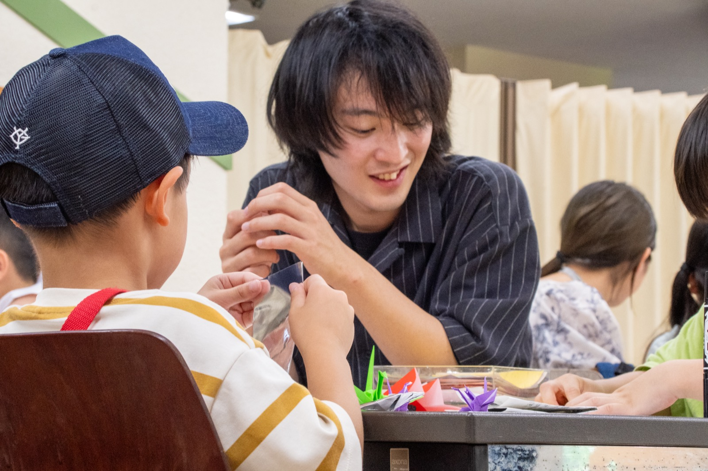
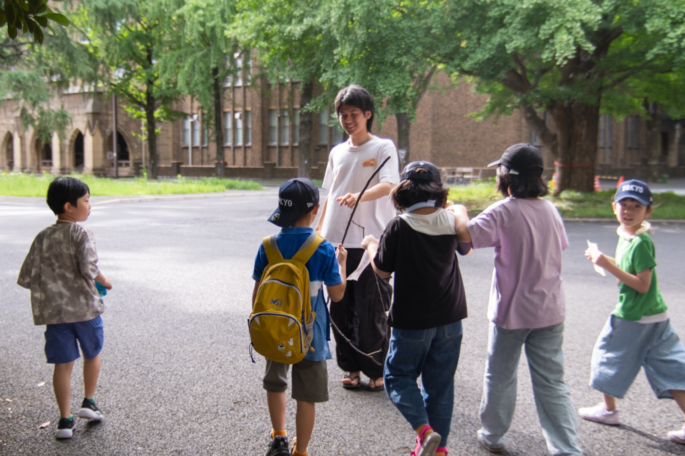

まずは来てみる
勉強しても、遊んでも、話さなくてもいい。自分のペースでいられる入口があります。

子どもが何かを頑張るための場所ではなく、ただそのまま来ていい場所。OIKOSの活動は、そうした空白に小さな灯りを置くところから始まります。
この案では、理念や事業説明をひと息で読ませるのではなく、写真と短い言葉をつなぎながら、なぜこの活動が必要なのかを静かに伝えていきます。

居場所の時間は、大きな出来事ではなく、小さなやり取りの連続でできています。大学生が近い存在としてそこにいることが、子どもたちにとっての安心につながります。
勉強しても、遊んでも、話さなくてもいい。自分のペースでいられる入口があります。
何度か通ううちに、学生スタッフや他の子どもたちとの関係が少しずつ育っていきます。
安心できる場所があることで、学校や日常のことを少し前向きに見られるようになることがあります。
大きな成果を誇示するのではなく、積み重なった変化の輪郭として実績を置くセクションです。
一度きりではなく、繰り返し訪れた関係の積み重ねです。
大学生の想いが、地域ごとの新しい居場所へとつながっています。
安心して戻ってこられる場所になっていることを示す数字です。
説明文より先に届くような、短い言葉の強さを活かす見せ方です。
「ここで会ったお姉さんに、また話したいことがある。」
「支援しているつもりだったけれど、むしろ自分の方が居場所をもらっていた。」